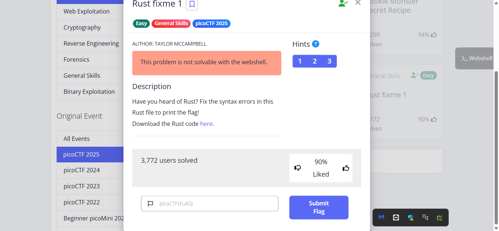
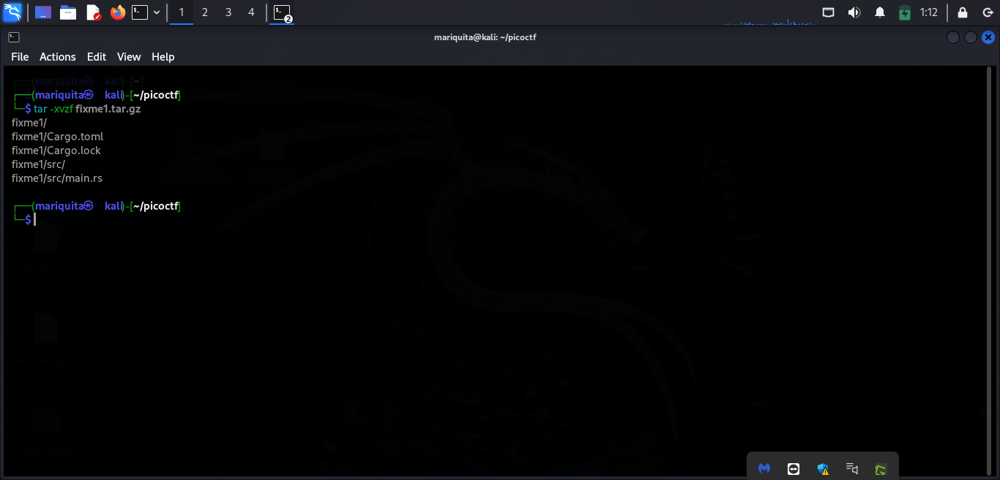
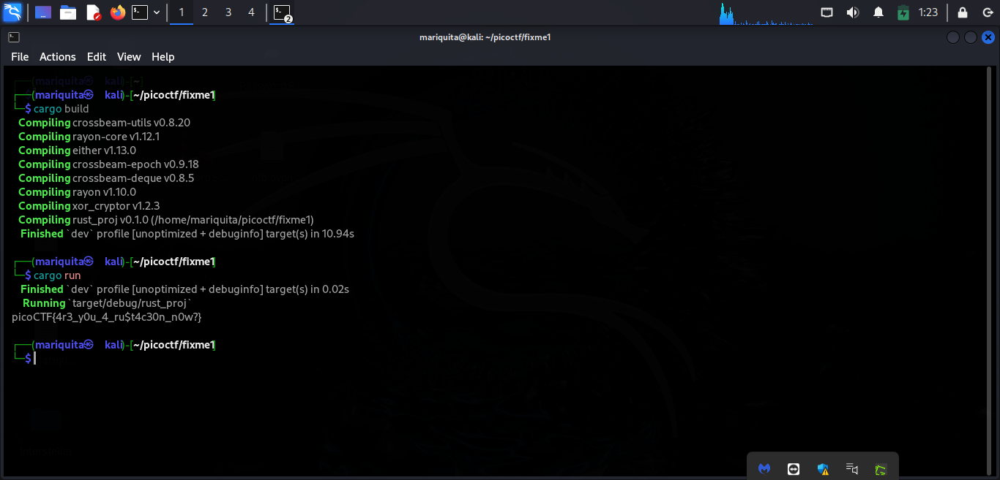

PicoCTF 2025 – Rust Fixme 1 Write-Up
Challenge Overview
CTF challenges often push us to learn and apply new skills in unexpected ways. This time, I tackled a General Skills challenge that required fixing a Rust program. Since I’m still getting comfortable with Rust, this was a great learning opportunity!

Downloading and Extracting the Files
As usual, I started by downloading the challenge files using wget:
The file came compressed as a .tar.gz, so I extracted it with:

Inside, I found a Rust project with the main code located in src/main.rs
Analyzing the Code
Opening main.rs, I saw a few syntax errors that prevented the program from compiling. I carefully went through the code to identify the issues

Identifying and Fixing Errors
Here’s what I found:
Missing Semicolon
On line 5, the code was missing a semicolon:
let key = String::from("CSUCKS") // ❌ Missing semicolon
✅ Fixed:let key = String::from("CSUCKS");
Incorrect Return Statement
On line 18, there was an incorrect return statement:
ret; // ❌ Incorrect syntax
✅ Fixed:return;
Incorrect println!() Format
On line 25, the println!() function was incorrectly formatted. Rust uses {} as a placeholder for variables:
Compiling and Running the Code
cargo init # Initialize Cargo project (if not already set up),
cargo build # Compile the code,
cargo run # Execute the program

And just like that—I got the flag!
This was a fun and straightforward challenge—easy peasy! 😎